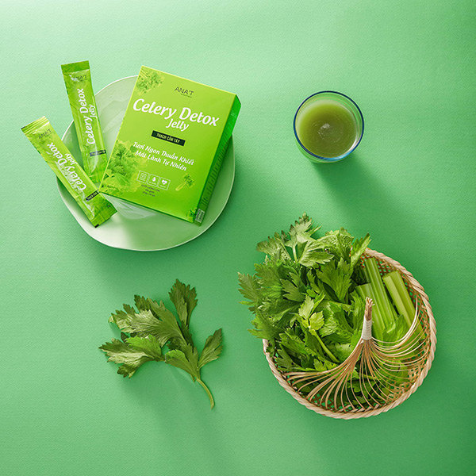

Nhã Lê – Thành công từ tuổi thơ nghèo khó
Thứ Tư, ngày 21/08/2019 08:00 AM (GMT+7)
Để có được một sự nghiệp thành công như ngày hôm nay, cũng như là hình mẫu để hướng tới của nhiều chị em, Nhã đã trải qua rất nhiều thăng trầm, thất bại trong cuộc sống và công việc.
Có một tuổi thơ đầy khốn khó như mồ côi cha mẹ, phải sống với gia đình nội, dựa vào tiền trợ cấp xã hội để đóng học phí, làm hàng chục nghề khác nhau để có cái ăn, cái mặc nhưng chị luôn không ngừng phấn đấu để vươn lên.
Quá khứ gian khó của chị là động lực phấn đấu để từng bước lên được vị trí giám đốc một công ty công nghệ thông tin. Tuy nhiên, ngành mỹ phẩm và spa mới là nơi tạo dựng tên tuổi và được nhiều người biết đến. Chính vì sự đam mê về ngành dịch vụ làm đẹp, chị bắt tay vào học lĩnh vực spa để tạo một ngã rẽ hoàn toàn mới cho bản thân và mở ra một sự nghiệp thành công.
Chị tâm sự: “Quan điểm kinh doanh của tôi là chậm và chắc. Ai làm kinh doanh cũng muốn có lợi nhuận nhưng với tôi, cái tâm của người làm kinh doanh phải được đặt lên hàng đầu. Với tôi và thương hiệu ANA’T của chúng tôi, những gì cao cấp, chất lượng, an toàn, phù hợp túi tiền nhất mới được đưa đến tay người tiêu dùng Việt”.
Trên thị trường hiện nay có rất nhiều sản phẩm làm đẹp và hỗ trợ làm đẹp cho chị em phụ nữ. Một trong những thương hiệu đang được rất nhiều chị em quan tâm và sử dụng là ANA’T.
ANA’T đã cho ra đời nhiều sản phẩm mỹ phẩm và thực phẩm chất lượng, nổi bật trong đó là 2 sản phẩm Thạch Cần Tây (Celery detox jelly) và Thạch bứa, sơn trà (Garcina diet jelly). Người phụ nữ đồng tạo dựng nên thương hiệu này là chị Nhã Lê – Giám đốc công ty thẩm mỹ Analee, cũng là người sở hữu chuỗi 6 thẩm mỹ viện từ Nam ra Bắc với hơn 100 nhân viên.
Chị Nhã Lê và thương hiệu ANA’T cũng là nơi tạo ra công ăn việc làm cho nhiều chị em đang ở nhà chăm con kinh doanh online kiếm thêm thu nhập. Khi được hỏi về các sản phẩm hot nhất hiện nay của công ty, chị chia sẻ: “Hiện nay 2 sản phẩm Thạch Cần Tây (Celery detox jelly) và Thạch bứa, sơn trà (Garcina diet jelly) luôn trong tình trạng cháy hàng. Một ví dụ nhỏ về sự tiện lợi là bạn chỉ cần ăn 1 gói thạch cần tây cô đặc thay cho cả ly nước ép cần tây rất khó uống, mắc tiền, mà tác dụng tốt của cần tây thì ai cũng biết rồi đấy”.
Chị cũng chia sẻ thêm lời nhắn cho các bạn trẻ có ước mơ làm một doanh nhân thành đạt: “Không bao giờ được bỏ cuộc dù có thất bại. Mỗi lần vấp ngã, đứng lên là tiền đề và kinh nghiệm quý báu cho thành công của bạn trong tương lai”.
Vanh Nguyễn(theo (Khám Phá))